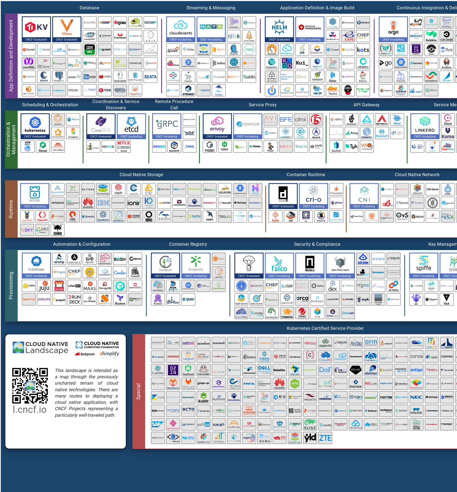

Contributing to Kubernetes Conformance Coverage
ii.coop
Created: 2020-10-22 Thu 16:45
About ii
People
- Hippie Hacker
- Caleb Woodbine
- Zach Mandeville
- Stephen Heywood
- Berno Kleinhans
- Riaan Kleinhans
Intro
What is Kubernetes Conformance?
CNCF Kubernetes Conformance ensures
… that every vendor’s version of Kubernetes supports the required APIs, as do open source community versions
Conformance website

k8s-conformance repo

Why is Kubernetes Conformance important?
Conformance with Kubernetes ensures:
- portability of workloads
- stable APIs behave the same everywhere
- freedom from vendor lock-in
- consistency with APIs
How many Kubernetes Distributions are Certified?
Currently, there are ~67 certified distributions.

Click Certified K8s/KCSP/KTP link on the left
How do I certify/verify a distribution?
Creating your Conformance Submission
cncf/k8s-conformance /instructions.md
vX.Y/$dir/README.md: how to reproduce your results. vX.Y/$dir/e2e.log: Test log output (from Sonobuoy). vX.Y/$dir/junit_01.xml: Machine-readable test log (from Sonobuoy). vX.Y/$dir/PRODUCT.yaml: Details of your PRODUCT
Document How to Bring test your cluster
Example README.md with instructions:
cncf/k8s-conformance/tree/master/v1.18/kind
time ./kind-run.sh 1.18.0
Watch Sonobuoy
watch kubectl get all --all-namespaces
Sonobuoy Logs
sonobuoy logs -f
Sonobuoy Results
find v1.*/plugins/e2e/results/global
Submit cncf/k8s-conformance results
cncf/k8s-conformance instructions.md#uploading
- Fork+Branch+Remote
git clone https://github.com/cncf/k8s-conformance cd k8s-conformance git remote add ii git@github.com:ii/k8s-conformance git checkout -b notkind-v1.18 - Copy results into place
cp -a ../notkind v1.18/notkind cp -a ../v1.*/plugins/e2e/results/global/* v1.18/notkind git status - Commit and Push Results
git add v1.18/notkind git commit -m 'Conformance results for v1.18/notkind' git push ii notkind-v1.18:notkind-v1.18-test
Open a PR to cncf/k8s-conformance
cncf/k8s-conformance/compare/master…your:branch
git diff --name-only origin/master
Identifying Gaps in Kubernetes Conformance Coverage
Loading K8s API into SQL
- SnoopDB loads the OpenAPI swagger.json
- Enables queries of K8s API definition
- Helps to understand the shape of kubernetes
How can I deploy and explore snoopdb?
git clone https://github.com/cncf/apisnoop
cd apisnoop/kind
kind create cluster --config=kind+apisnoop.yaml
kubectl wait --for=condition=Ready --timeout=600s \
--selector=app.kubernetes.io/name=auditlogger pod
export PGUSER=apisnoop
export PGHOST=localhost
psql -c "select distinct useragent \
from testing.audit_event;"
psql
export PGUSER=apisnoop PGHOST=localhost
psql -c "select distinct useragent \
from testing.audit_event \
where useragent not ilike 'kube-%';"
sql-mode
select 1;
Loading CI logs into SQL
- SnoopDB loads recent CI audit logs
- Enables queries of K8s API usage
- Helps understand what we are testing
e2e.test framework support
- UserAgent updated to include test name
- AuditLogs include test and operation
Query Gaps in Conformance Coverage
- Compare Operations hit by [Conformance]
- Query untested surface area
Visualize Data
Closing Gaps in Kubernetes Conformance Coverage
APISnoop + AuditSink + Test writing
Auditing the OpenAPI
- APIServer can be configured to log usage
- Combining an AuditPolicy and AuditSink
- Usage is logged into SnoopDB in a cluster
SnoopDB in cluster
- Identify in Cluster Usage
- Focus on hitting Gaps in API
MockTest Demo
Preventing gaps in Kubernetes Conformance Coverage
prow.cncf.io **
Verifying Cloud Provider Submission
prow.cncf.io
For every vendor and distribution to be marked as official, tests must be run against the Kubernetes cluster to verify it's APIs behave in a given way per the test.
The submitted PR

Prow comments

PR labels